Pyon-chan Collection
The very first one the admin got was Pyon-chan. At the time, my parents were collecting SSP-kai coupons and exchanged them for it. Although Pyon-chan is no longer in front of stores today, it is the character that left the strongest impression on the admin.
Ampoule Pyon-chan/アンプルピョンちゃん
Figure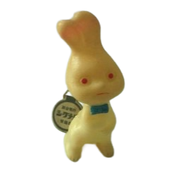
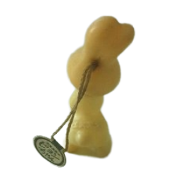
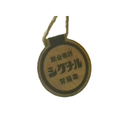
3rd generation (1963–1967) Pyon-chan.
Approximately 5 cm. It looks like he is holding an ampoule in his hand.
It says "Sogo Kyokan Signal Ichoyaku" (Comprehensive Liver-Strengthening Signal Gastrointestinal Medicine). I occasionally rely on Shin Signal Oral Liquid, so I was surprised to learn it is a medicine that has been around for quite a long time. Back in the day, it used to come in ampoules.
Approximately 5 cm. It looks like he is holding an ampoule in his hand.
It says "Sogo Kyokan Signal Ichoyaku" (Comprehensive Liver-Strengthening Signal Gastrointestinal Medicine). I occasionally rely on Shin Signal Oral Liquid, so I was surprised to learn it is a medicine that has been around for quite a long time. Back in the day, it used to come in ampoules.
Acquired: ？
Ampoule Pyon-chan/アンプルピョンちゃん
Figure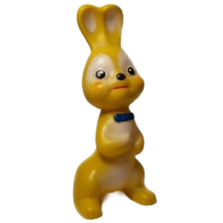
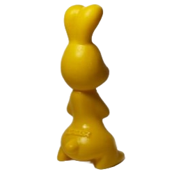
Ampoule Pyon-chan Part 2.
Alternative version of the 3rd generation (1963–1967) Pyon-chan.
Alternative version of the 3rd generation (1963–1967) Pyon-chan.
Acquired:？
Shake Hand Pyon-chan/シェイクハンドピョンちゃん
Figure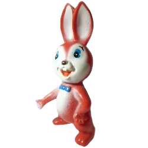
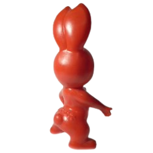
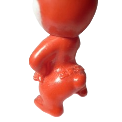
4th generation (1967–1972) Pyon-chan.
Also known as Shake Hand Pyon-chan.Looks like he is shaking hands. Approx. 13 cm."SSP" (エスエス) lettering. The face and body appear to be spray-painted.
Also known as Shake Hand Pyon-chan.Looks like he is shaking hands. Approx. 13 cm."SSP" (エスエス) lettering. The face and body appear to be spray-painted.
Acquired:2006
Love & Peace Pyon-chan/ラブ&ピースピョンちゃん
Figure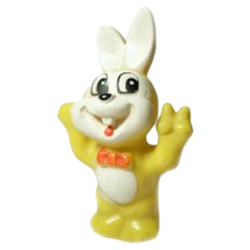
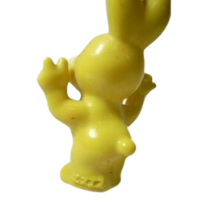
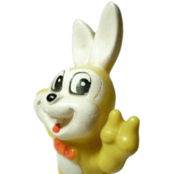
5th generation (1972–1975) Pyon-chan.
Also known as Love & Peace Pyon-chan.Apparently, he is making the "Love & Peace" sign or V-sign, which was popular at the time (around 1972 / Showa 47). Other color variations also exist.
Also known as Love & Peace Pyon-chan.Apparently, he is making the "Love & Peace" sign or V-sign, which was popular at the time (around 1972 / Showa 47). Other color variations also exist.
Acquired:2006
Tree Stump Pyon-chan/切り株ピョンちゃん
Figure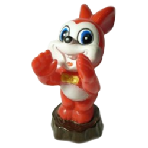
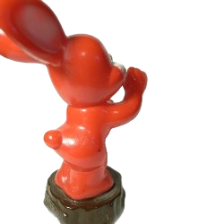
6th Generation Pyon-chan (1975–1979).
It is also called "Tree Stump (Progress) Pyon-chan." I bought it at an antique market. Here is what the back looks like. It says "SS" on the tree stump. Besides this red Pyon-chan, there are many other variations, such as yellow and pink ones, as well as ones in different poses. This version is around the time when Pyon-chan starts to feel nostalgic to me personally (lol). Personally, I think this one is the cutest (though they are all cute!). It is the one I am most familiar with. Since Pyon-chan's face has changed so much over the different eras, I'm sure everyone has their own fond memories and attachments to specific versions.
It is also called "Tree Stump (Progress) Pyon-chan." I bought it at an antique market. Here is what the back looks like. It says "SS" on the tree stump. Besides this red Pyon-chan, there are many other variations, such as yellow and pink ones, as well as ones in different poses. This version is around the time when Pyon-chan starts to feel nostalgic to me personally (lol). Personally, I think this one is the cutest (though they are all cute!). It is the one I am most familiar with. Since Pyon-chan's face has changed so much over the different eras, I'm sure everyone has their own fond memories and attachments to specific versions.
Acquired:2005
12-Month Pyon-chan/12ヶ月ピョンちゃん
Figure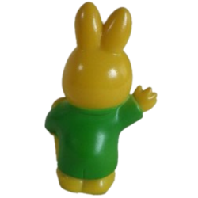
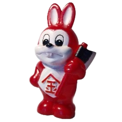
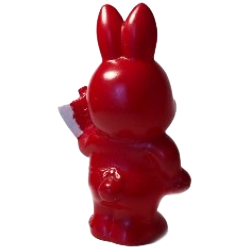
7th Generation Pyon-chan (1979–1995).
May (Kintaro) and June (Raincoat).I bought them at a shop in the Osu Shopping District in Nagoya. There are 12 varieties in total.
May (Kintaro) and June (Raincoat).I bought them at a shop in the Osu Shopping District in Nagoya. There are 12 varieties in total.
Acquired:2006
Pyon-chan Finger Puppets and Keychains.
Finger Puppets & Keychains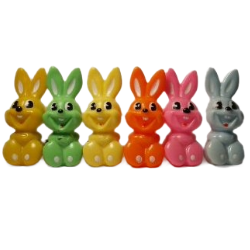
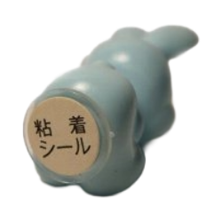
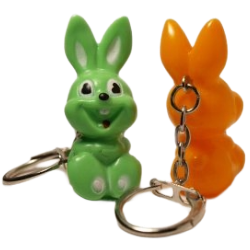
Pyon-chan finger puppets and keychains.
I suspect they were given away as promotional prizes.I got these finger puppets at an antique market. Besides these five colors, there is also a blue one, which I couldn't get my hands on. I finally found the blue Pyon-chan! (March 2009) Is it a complete set with 6 colors? When were these distributed? If anyone knows, please let me know!
I suspect they were given away as promotional prizes.I got these finger puppets at an antique market. Besides these five colors, there is also a blue one, which I couldn't get my hands on. I finally found the blue Pyon-chan! (March 2009) Is it a complete set with 6 colors? When were these distributed? If anyone knows, please let me know!
Acquired:2009
Excursion Pyon-chan/遠足ピョンちゃん
Figure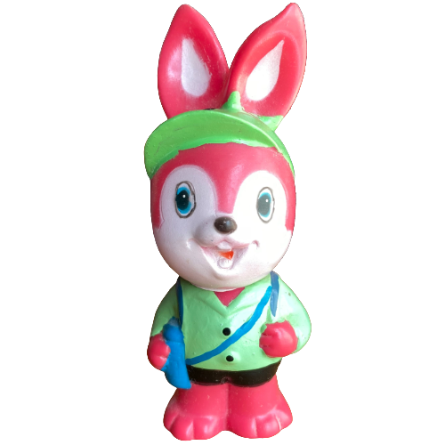
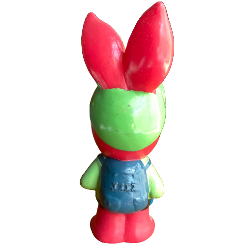
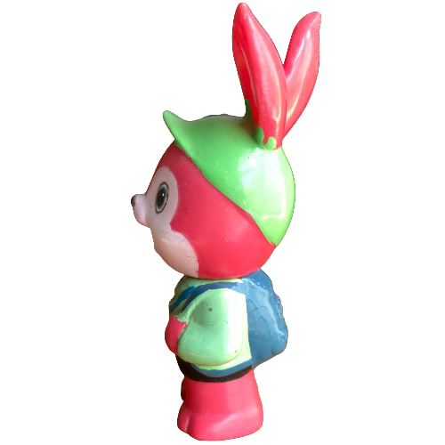
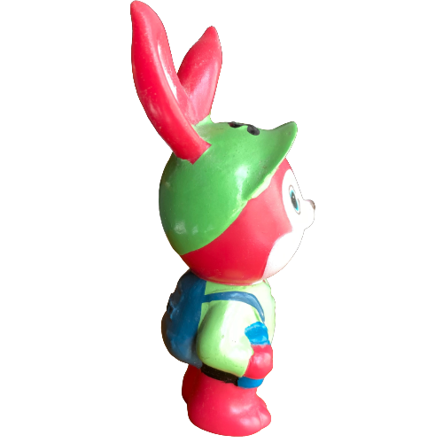
Quite a long time has passed since I bought this. My memories from back then are a bit fuzzy, but I'm posting it for now anyway. (2026)
Acquired:？